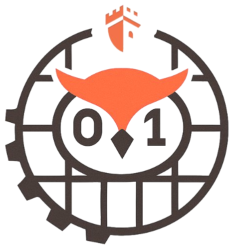
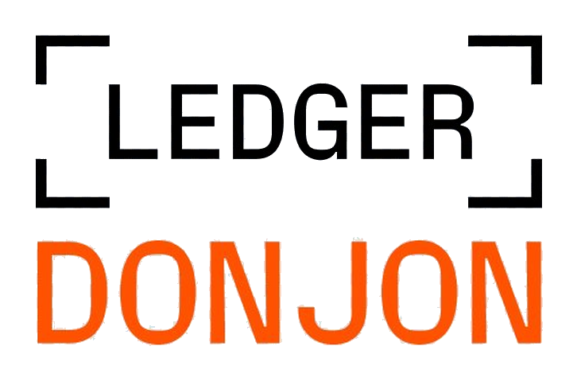

Talks
Presentations
Arsenal
Black Hat Asia 2026
Singapore — Tool demonstration

Seminar
Cybersecurity & Defense Day
Institut Polytechnique de Paris


Zorya is a concolic execution engine built in Rust. It translates binaries to Ghidra's P-Code, drives symbolic exploration with Z3, and finds crashes in compiled Go programs — no source code required.
Multi-layer filtering concentrates symbolic reasoning on panic-relevant paths, achieving 1.8–3.9× speedups by pruning 33–70% of irrelevant branches.
Zorya analyzes executables with symbols to help developers find bugs in the binaries they build before production deployment.
Zorya discovers bugs in two complementary ways: runtime panic-function checks and de facto bug discovery through overlay concolic execution on alternative paths.
Ghidra's intermediate representation abstracts ISA specifics. Analyze x86_64, ARM, or any Ghidra-supported architecture through one engine.
Tested against go-ethereum (Geth), Kubernetes, Gin framework, Omni Network, and known CVEs including CVE-2022-30631.
Interactive guided mode for exploration, plus a fuzzer module for automated batch campaigns with JSON configs and timeout management.
Fetching latest documentation from the repository...
Concurrency bugs are often non-deterministic and difficult to trigger with regular fuzzing. Volos focuses on goroutine interactions and interleaving-sensitive failures.
Use mainline Zorya for broad single-threaded vulnerability exploration, then pivot to Volos when concurrency-specific analysis is needed.